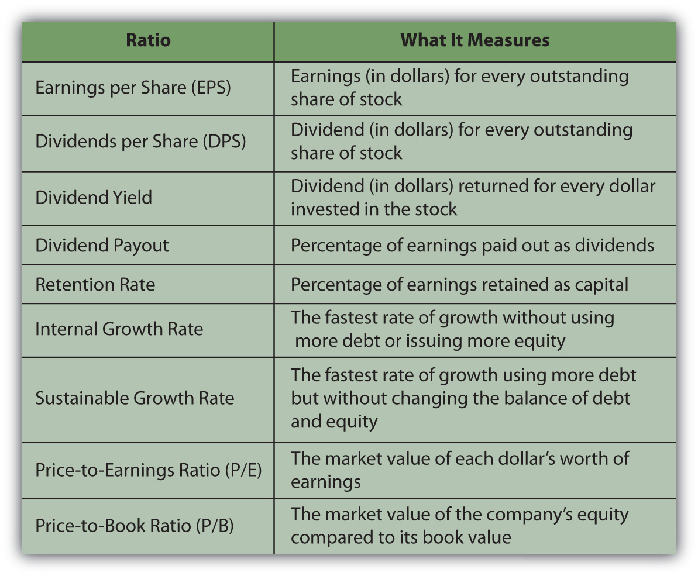

A corporation creates a return for investors by creating earnings. Those earnings may be paid out in cash as a dividend or retained as capital by the company. A company’s ability to create earnings is watched closely by investors because the company’s earnings are the investor’s return.
A company’s earnings potential can be tracked and measured, and several measurements are expressed as ratios. Mathematically, as discussed in Chapter 3 "Financial Statements", a ratio is simply a fraction. In investment analysis, a ratio provides a clear means of comparing values. Three kinds of ratios important to investors are return ratios, growth ratios, and market value ratios.
The ratios described here are commonly presented in news outlets and Web sites where stocks are discussed (e.g., http://www.nasdaq.com), so chances are you won’t have to calculate them yourself. Nevertheless, it is important to understand what they mean and how to use them in your investment thinking.
One of the most useful ratios in looking at stocks is the earnings per share (EPS)The dollar value of the earnings per each share of common stock. ratio. It calculates the company’s earnings, the portion of a company’s profit allocated to each outstanding share of common stock. The calculation lets you see how much you benefit from holding each share. Here is the formula for calculating EPS:
EPS = (net income − preferred stock dividends) ÷ average number of common shares outstandingThe company’s earnings are reported on its income statement as net income, so a shareholder could easily track earnings growth. However, EPS allows you to make a direct comparison to other stocks by putting the earnings on a per-share basis, creating a common denominator. Earnings per share should be compared over time and also compared to the EPS of other companies.
When a stock pays a dividend, that dividend is income for the shareholder. Investors concerned with the cash flows provided by an equity investment look at dividends per shareThe dollar value of the dividend return to each share of stock. or DPS as a measure of the company’s ability and willingness to pay a dividend.
DPS = common stock dividends ÷ average number of common shares outstandingAnother measure of the stock’s usefulness in providing dividends is the dividend yieldThe return provided by the dividend relative to the share price, or the dividend per each dollar of investment, given its market price., which calculates the dividend as a percentage of the stock price. It is a measure of the dividend’s role as a return on investment: for every dollar invested in the stock, how much is returned as a dividend, or actual cash payback? An investor concerned about cash flow returns can compare companies’ dividend yields.
dividend yield = dividend per share (in dollars) ÷ price per share (in dollars)For example, Microsoft, Inc., has a share price of around $24, pays an annual dividend of $4.68 billion, and has about nine billion shares outstanding; for the past year, it shows earnings of $15.3 billion.NASDAQ, http://quotes.nasdaq.com/asp/SummaryQuote.asp?symbol=MSFT& selected=MSFT (accessed July 29, 2009). Assuming it has not issued preferred stock and so pays no preferred stock dividends,
EPS = 15.3 billion/9 billion = $1.70 DPS = 4.68 billion/9 billion = $0.52 dividend yield = 0.52/24 = 2.1667%Microsoft earned $15.3 billion, or $1.70 for each share of stock held by stockholders, from which $0.52 is actually paid out to shareholders. So if you buy a share of Microsoft by investing $24, the cash return provided to you by the company’s dividend is 2.1667 percent.
Earnings are either paid out as dividends or are retained by the company as capital. That capital is used by the company to finance operations, capital investments such as new assets for expansion and growth or repayment of debt.
The dividend is the return on investment that comes as cash while you own the stock. Some investors see the dividend as a more valuable form of return than the earnings that are retained as capital by the company. It is more liquid, since it comes in cash and comes sooner than the gain that may be realized when the stock is sold (more valuable because time affects value). It is the “bird in the hand,” perhaps less risky than waiting for the eventual gain from the company’s retained earningsThe portion of the company’s earnings or net income that is not distributed (paid out) to owners as a dividend, but is retained as equity financing for the company..
Some investors see a high dividend as a sign of the company’s strength, indicative of its ability to raise ample capital through earnings. Dividends are a sign that the company can earn more capital than it needs to finance operations, make capital investments, or repay debt. Thus, dividends are capital that can be spared from use by the company and given back to investors.
Other investors see a high dividend as a sign of weakness, indicative of a company that cannot grow because it is not putting enough capital into expansion and growth or into satisfying creditors. This may be because it is a mature company operating in saturated markets, a company stifled by competition, or a company without the creative resources to explore new ventures.
As an investor, you need to look at dividends in the context of the company and your own income needs.
The more earnings are paid out to shareholders as dividends, the less earnings are retained by the company as capital.
earnings = dividends + capital retainedSince retained capital finances growth, the more earnings are used to pay dividends, the less earnings are used to create growth. Two ratios that measure a company’s choice in handling its earnings are the dividend payout rate and the retention rate. The dividend payout rateThe percentage of earnings that is paid out as a dividend. compares dividends to earnings. The retention rateThe rate at which a company retains earnings for use as additional capital or the earnings retained (not paid out as dividends) as a percentage of earnings. compares the amount of capital retained to earnings.
The dividend payout rate figures the dividend as a percentage of earnings.
dividend payout rate = dividends ÷ earningsThe retention rate figures the retained capital as a percentage of earnings.
retention rate = capital retained ÷ earningsBecause earnings = dividends + capital retained, then
100% of earnings = dividend payout + retention rate.If a company’s dividend payout rate is 40 percent, then its retention rate is 60 percent; if it pays out 40 percent of its earnings in dividends, then it retains 60 percent of them.
Since Microsoft has earnings of $15.3 billion and dividends of $4.68 billion, it must retain $10.62 billion of its earnings. So, for Microsoft,
dividend payout rate = 4.68 billion/15.3 billion = 30.59% retention rate = 10.62 billion/15.3 billion = 69.41%.There is no benchmark dividend payout or retention ratio for every company; they vary depending on the age and size of the company, industry, and economic climate. These numbers are useful, however, to get a sense of the company’s strategy and to compare it to competitors.
A company’s value is in its ability to grow and to increase earnings. The rate at which it can retain capital, earn it and not pay it out as dividends, is a factor in determining how fast it can grow. This rate is measured by the internal growth rateThe maximum rate of growth achieved without any issuance of debt or new equity capital. and the sustainable growth rate. The internal growth rate answers the question, “How fast could the company grow (increase earnings) without any new capital, without borrowing or issuing more stock?” Given how good the company is at taking capital and turning it into assets and using those assets to create earnings, the internal growth rate looks at how fast the company can grow without any new borrowing or new shares issued.
The sustainable growthThe maximum rate of growth possible without changing the use of debt and equity capital. rate answers the question, “How fast could the company grow without changing the balance between using debt and using equity for capital?” Given how good the company is at taking capital and turning it into assets and using those assets to create earnings, the sustainable growth rate looks at how fast the company can grow if it uses some new borrowing, but keeps the balance between debt and equity capital stable.
Both growth rates use the retention rate as a factor in allowing growth. The fastest rate of growth could be achieved by having a 100 percent retention rate, that is, by paying no dividends and retaining all earnings as capital.
An investor who is not using stocks as a source of income but for their potential gain may look for higher growth rates (evidenced by a higher retention rate and a lower dividend payout rate). An investor looking for income from stocks would instead be attracted to companies offering a higher dividend payout rate and a lower retention rate (despite lower growth rates).
While return and growth ratios are measures of a company’s fundamental value, and therefore the value of its stocks, the actual stock price is affected by the market. Investors’ demand can result in underpricing or overpricing of a stock, depending on its attractiveness in relation to other investment choices or opportunity cost.
A stock’s market value can be compared with that of other stocks. The most common measure for doing so is the price-to-earnings ratioThe ratio of a stock’s market value per share to its earnings per share, or the market value of one dollar of the company’s earnings., or P/E. Price-to-earnings ratio is calculated by dividing the price per share (in dollars) by the earnings per share (in dollars). The result shows the investment needed for every dollar of return that the stock creates.
P/E = price per share ÷ earnings per shareFor Microsoft, for example, the price per share is around $24, and the EPS is $1.70, so the P/E = 24.00/1.70 = $14.12. This means that the price per share is around fourteen times bigger than the earnings per share.
The larger the P/E ratio, the more expensive the stock is and the more you have to invest to get one dollar’s worth of earnings in return. To get $1.00 of Microsoft’s earnings, you have to invest around $14. By comparing the P/E ratio of different companies, you can see how expensive they are relative to each other.
A low P/E ratio could be a sign of weakness. Perhaps the company has problems that make it riskier going forward, even if it has earnings now, so the future expectations and thus the price of the stock is now low. Or it could be a sign of a buying opportunity for a stock that is currently underpriced.
A high P/E ratio could be a sign of a company with great prospects for growth and so a higher price than would be indicted by its earnings alone. On the other hand, a high P/E could indicate a stock that is overpriced and has nowhere to go but down. In that case, a high P/E ratio would be a signal to sell your stock.
How do you know if the P/E ratio is “high” or “low”? You can compare it to other companies in the same industry or to the average P/E ratio for a stock index of similar type companies based on company size, age, debt levels, and so on. As with any of the ratios discussed here, this one is useful in comparison.
Another indicator of market value is the price-to-book ratio (P/B)A ratio comparing the market value of the company to its book or “original” value.. Price-to-book ratio compares the price per share to the book value of each share. The book valueThe valuation of assets, liabilities, and equity from the balance sheet; the corporation’s original investment in its assets, liabilities, and equity. is the value of the company that is reported “on the books,” or the company’s balance sheet, using the intrinsic or original values of assets, liabilities, and equity. The balance sheet does not show the market value of the company’s assets, for example, not what they could be sold for today; it shows what they were worth when the company acquired them. The book value of a company should be less than its market value, which should have appreciated over time. The company should be worth more as times goes on.
P/B = price per share ÷ book value of equity per shareSince the price per share is the market value of equity per share, the P/B ratio compares the current market value of the company’s equity to its book value. If that ratio is greater than one, then the company’s equity is worth more than its original value, and the company has been increasing its value. If that ratio is less than one, then the company’s current value is less than its original value, so the value has been decreasing. A P/B of one would indicate that a company has just been breaking even in terms of value over the years.
The higher the P/B ratio, the better the company has done in increasing its value over time. You can calculate the ratio for different companies and compare them by their ability to increase value.
Figure 15.5 "Ratios and Their Uses" provides a summary of the return, growth, and market value ratios.
Figure 15.5 Ratios and Their Uses
Ratios can be used to compare a company with its past performance, with its competitors, or with competitive investments. They can be used to project a stock’s future value based on the company’s ability to earn, grow, and be a popular investment. A company has to have fundamental value to be an investment choice, but it also has to have market value to have its fundamental value appreciated in the market and to have its price reflect its fundamental value.
To go back to Keynes’s analogy: it may take beauty to win a beauty contest, but beauty has to shine through to be appreciated by a majority of the judges. And beauty, as you know, is in the eye of the beholder.